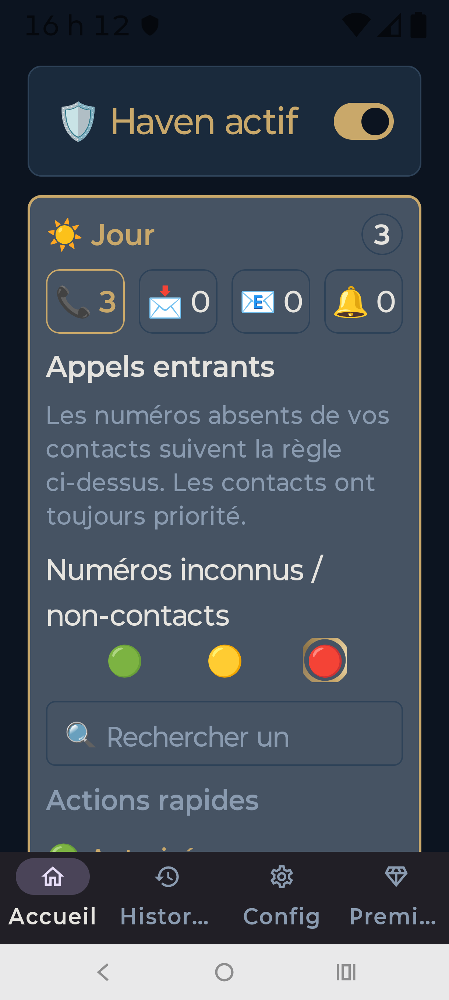
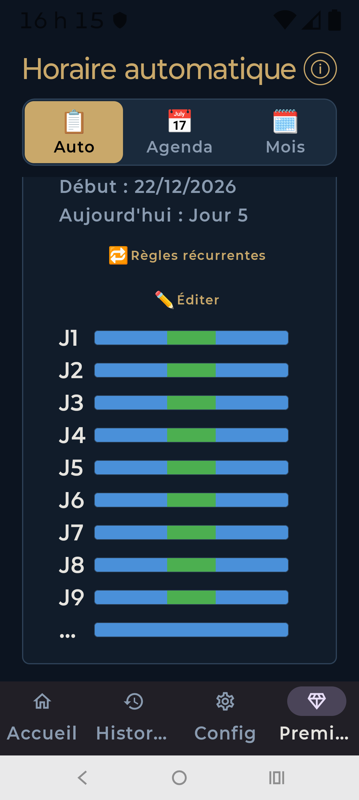

Conduite automatique
Connectez simplement votre téléphone à votre voiture.
Après une seule configuration, Haven détecte automatiquement vos trajets et active le mode conduite sans aucune intervention.
Réappropriez-vous votre tranquillité d'esprit.
Reprenez le contrôle total de vos appels téléphoniques, SMS, courriels et notifications.
Configurez Haven une seule fois selon vos préférences, puis laissez-le travailler automatiquement en arrière-plan. Que vous soyez au travail, à la maison, en voiture ou en train de dormir, Haven adapte son comportement sans que vous ayez à intervenir.
Moins d'interruptions. Plus de concentration. Plus de tranquillité, chaque jour.



Connectez simplement votre téléphone à votre voiture.
Après une seule configuration, Haven détecte automatiquement vos trajets et active le mode conduite sans aucune intervention.
Bloquez les appels, SMS et notifications pendant la nuit pour enfin dormir en paix.
Si un contact d'urgence est configuré, un deuxième appel reçu en moins de cinq minutes pourra passer automatiquement afin de gérer les vraies urgences.
Les appels d'urgence (911 / 112) ainsi que les alertes gouvernementales demeurent toujours autorisés afin de préserver votre sécurité.
Configurez vos règles une seule fois.
Ensuite, Haven applique automatiquement les bons comportements selon vos horaires, vos modes automatiques et votre contexte d'utilisation.
Bloquez les appels, SMS et notifications pendant la nuit, tout en laissant passer les vraies urgences : contacts d'urgence, double appel rapide, 911 / 112 et alertes gouvernementales.